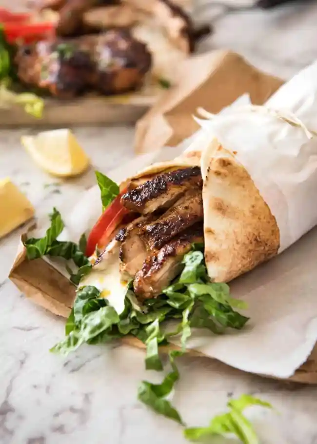

How to Make The Best Chicken Shawarma

Description
Chicken shawarma is a popular Middle Eastern dish known for its flavorful and aromatic marinated chicken, which is typically cooked on a vertical rotisserie. The dish originates from the Levantine region and has gained widespread popularity around the globe. The preparation of chicken shawarma involves marinating thin slices of chicken in a blend of spices and seasonings, which often includes garlic, turmeric, cumin, paprika, coriander, and sometimes cinnamon or allspice. Yogurt or lemon juice is commonly added to the marinade to tenderize the meat and infuse it with a tangy flavor. Once marinated, the chicken is stacked on a vertical spit and slowly roasted, allowing the outside layer to crisp up while remaining juicy inside. As the chicken cooks, thin slices are shaved off and typically served in warm pita bread or flatbread. Chicken shawarma is often accompanied by a variety of toppings and sauces that enhance its taste. Chicken shawarma can also be served as a platter, often accompanied by rice or fries, salad, and additional sauces. The combination of tender, spiced chicken with the fresh and tangy accompaniments makes chicken shawarma a beloved dish that offers a burst of flavors and textures in every bite.
Ingredients
- Marinade Ingredients
- 2 lb skinless, boneless chicken thigh fillets
- 1 large garlic clove, minced
- 1 tbsp ground coriander
- 1 tbsp ground cumin
- 1 tbsp ground cardamom
- 1 tsp ground cayenne pepper
- 2 tsp smoked paprika
- 2 tsp salt
- Black pepper
- 2 tbsp lemon juice
- 3 tbsp olive oil
- Yoghurt Sauce
- 1 cup Greek yoghurt
- 1 crushed garlic clove
- 1 tsp cumin
- Squeeze of lemon juice
- Salt and pepper
- To finish off the shawarma
- Flatbread
- Sliced lettuce
- Tomato slices
- Hot sauce
Step-By-Step Procedure
- Combine marinade ingredients in a large ziplock bag. Add the chicken, seal, the massage from the outside with your hands to make sure each piece is coated. Marinate 4-24 hours.
- Combine the yoghurt sauce ingredients in a bowl and mix. Cover and put in the fridge until required (it will last for 3 days in the fridge).
- Heat a large non-stick skillet with 1 tablespoon over medium high heat, or lightly brush a BBQ hotplate/grills with oil and heat to medium high.
- Place chicken in the skillet or on the grill and cook the first side for 4 to 5 minutes until nicely charred. Turn and cook the other side for 3 to 4 minutes (the 2nd side takes less time).
- Remove chicken from the grill and cover loosely with foil. Set aside to rest for 5 minutes.
- Slice chicken and pile onto platter alongside flatbreads, Salad and the Yoghurt Sauce.
- To make a wrap, get a piece of flatbread and smear with Yoghurt Sauce. Top with a bit of lettuce, tomato, Chicken Shawarma and hot sauce. Roll up and enjoy!